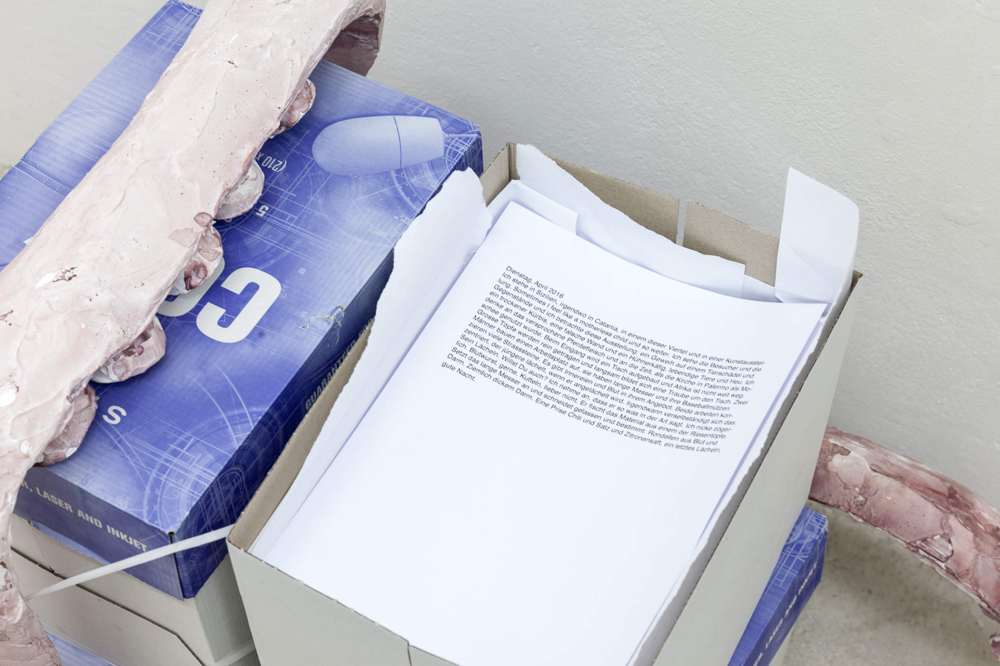
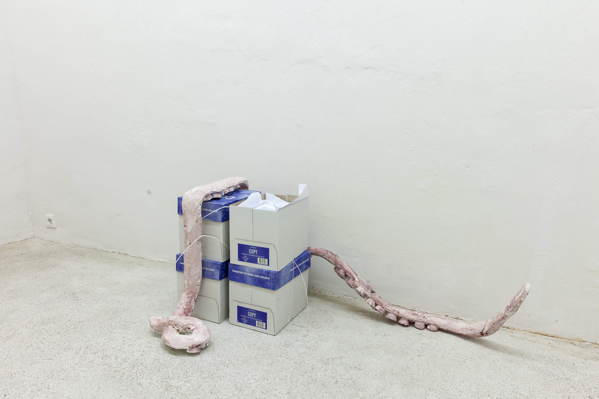
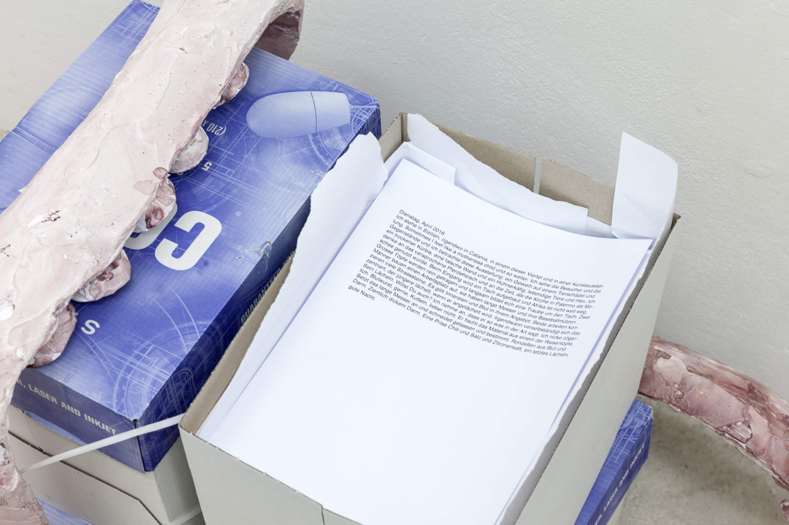
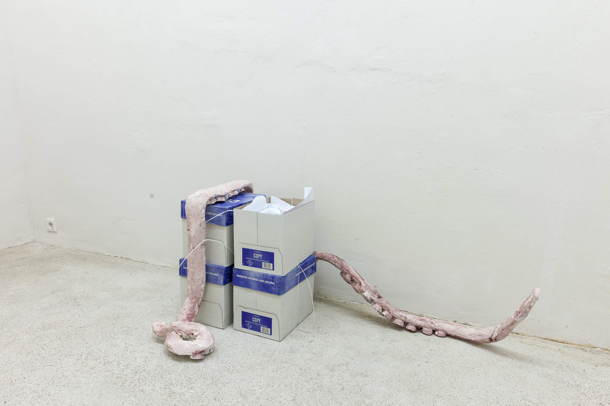
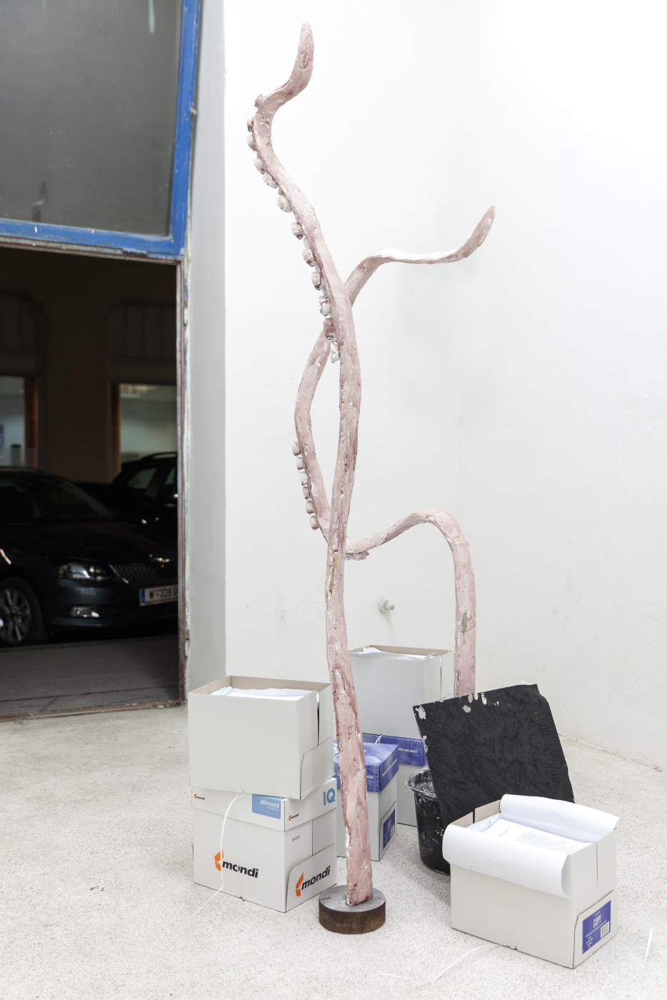
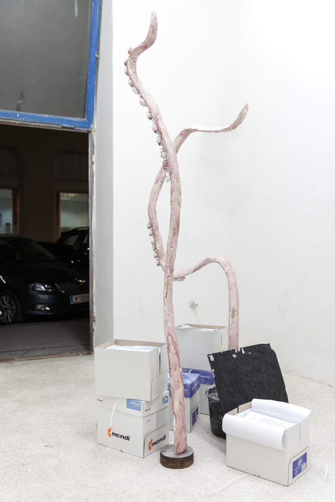
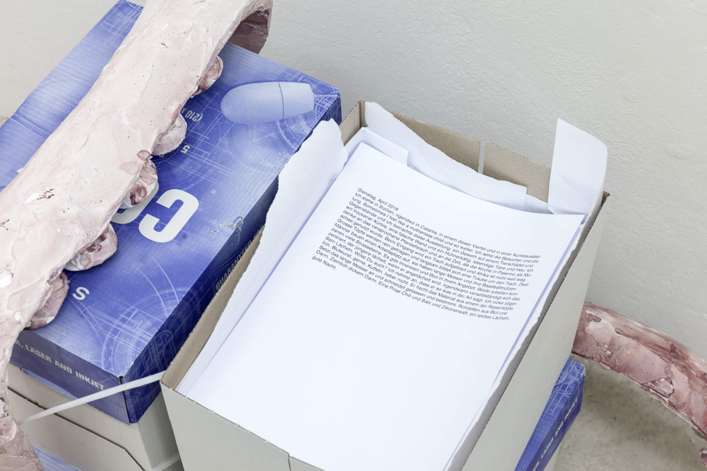
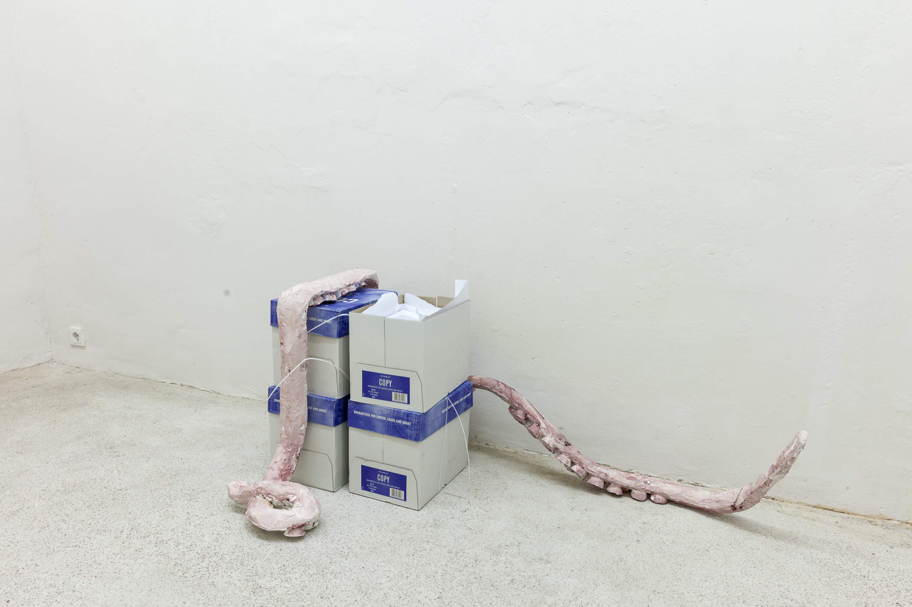
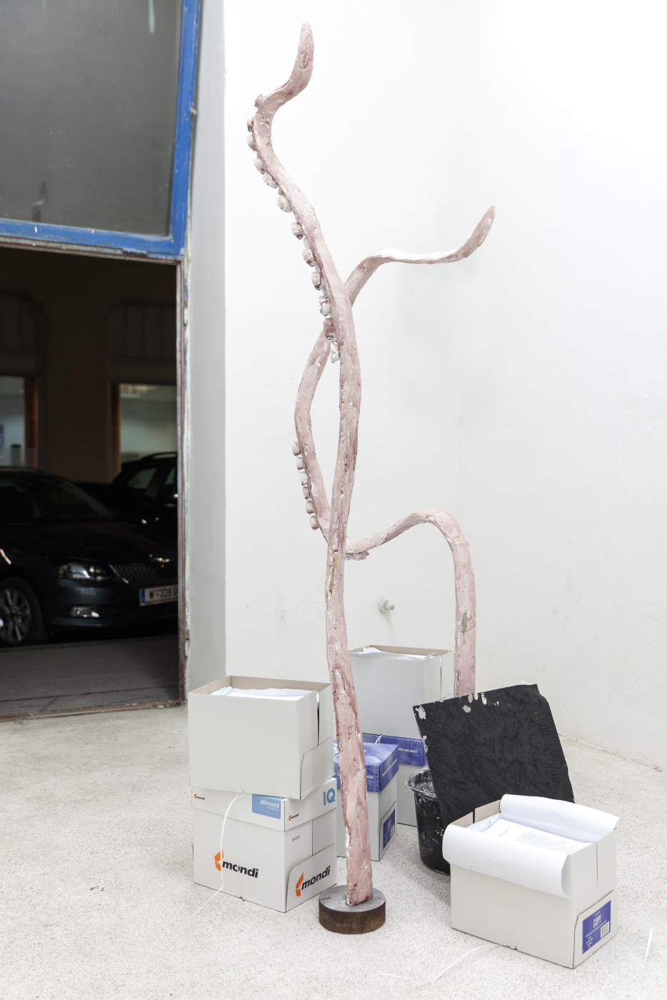

 
17th – 23rd October, 2016
invited by Eugen Wist
readers: Julia Znoj, Yuri Minoguchi, Philip Pichler
photos by Philipp Friedrich
"Fabulant" Eva said when she saw the objects a few days ago.
Friends wrote down their adventure tales for me and these are their travel companions.
with Tenzing Barshee, Sho Hasegawa, Philipp Köster, Mariko Minoguchi, Sarah Octobre, Rebekka Seubert
